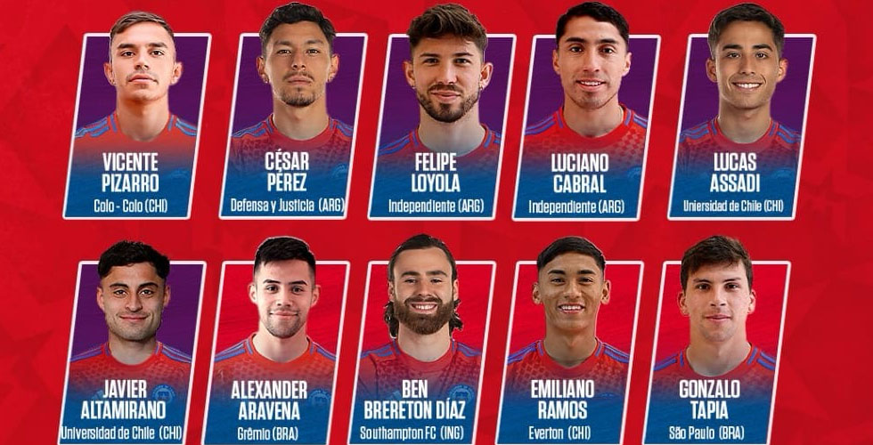

Deporte - Noticias (Chile)
| Título | Categoría | Contenido / Fuente |
|---|---|---|
Nicolás Córdova entrega la nómina de La Roja |
Selección |  ANFP y cuerpo técnico dan vuelta a la nómina con incorporaciones jóvenes. Fuente: AlAireLibre / ANFP. |
Colo Colo oficializa la salida de Jorge Almirón |
Fútbol - Clubes |  Decisión en la banca de Colo Colo y nombres propuestos para reemplazo interino. Fuente: Emol. |
ANFP anuncia estadio y fecha de la Supercopa |
Competencias | Fechas y sedes confirmadas para el clásico y Supercopa nacional. Fuente: Emol / ANFP. |